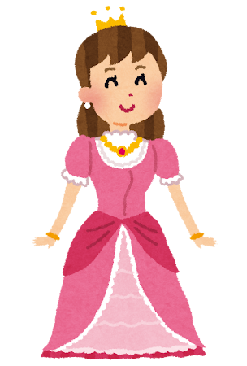
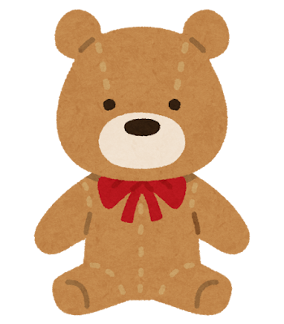

The Many Kinds of "The"
In English, you have “the”. In Spanish, you have “la” and “el”.
In German, you have “der”, “die”, and “das”.
If you haven't run away yet, you're braver than some! Be encouraged by the fact that there are some rules you can follow to know which form of "the" a word uses.
Click on the buttons below to learn about them!
Der - The Masculine "The"

If you see these suffixes at the end of a word, chances are it uses "der":
- -er: der Computer/the computer, der Drucker/the printer
- -en: der Garten/the garden, der Ofen/the oven
- -el: der Apfel/the apple, der Vogel/the bird
- -ig: der König/the king, der Honig/the honey
- -ling: der Schmetterling/the butterfly, der Zwilling/the twin
- -ismus: der Realismus/the realism, der Kapitalismus/the capitalism
- -or: der Motor/the motor, der Direktor/the director
These groups of words also tend to be masculine and take "der":
- Words associated with male or masculine beings: der Großvater/the grandfather, der Löwe/the lion
- Days, months, seasons: der Montag/the Monday, der Januar/the January, der Sommer/the summer
- Most weather elements: der Regen/the rain, der Schnee/the snow, der Wind/the wind
Die - The Feminine "The"
If you see these suffixes at the end of a word, chances are it uses "die":
- -e: die Blume/the flower, die Lampe/the lamp
- -heit / -keit: die Freiheit/the freedom, die Möglichkeit/the possibility
- -schaft: die Freundschaft/the friendship, die Mannschaft/the team
- -ion: die Nation/the nation, die Diskussion/the diskussion
- -tät: die Universität/the university, die Identität/the identity
- -ik: die Musik/the music, die Physik/the physics
- -ur: die Natur/the nature, die Kultur/the culture
- -in: die Lehrerin/the teacher, die Bäckerin/the baker
***NOTE: if you drop the -in from words like these, you actually get the masculine form!***
die Lehrerin the female teacher => der Lehrer the male teacher
Female and feminine entities also use "die", like die Mutter/the mother, die Schwester/the sister
***BUT NOT das Mädchen/the girl***
Das - The Neuter "The"
If you see these suffixes at the end of a word, chances are it uses "das":
- -chen: das Mädchen/the girl, das Brötchen/the bread roll
- -lein: das Fräulein/the young woman, das Büchlein/the little book
- -ment: das Instrument/the instrument, das Dokument/the document
- -um: das Zentrum/the center, das Studium/the study
- -ma: das Thema/the theme, das Drama/the drama
***NOTE: -chen and -lein kind of make a word "cutesy wutsy"***
Die Mädel the lady => Das Mädchen the little lady
Der Vogel the bird => Das Vöglein the birdie
These groups of words also tend to be neuter and take "das":
- Verbs used as nouns: das Lesen/the reading, das Schwimmen/the swimming
- Most metals: das Gold/the gold, das Silber/the silver, das Eisen/the iron
- Colors used as nouns: das Blau/the blue, das Rot/the red
- Many modern words borrowed from English: das Internet/the internet, das Hobby/the hobby